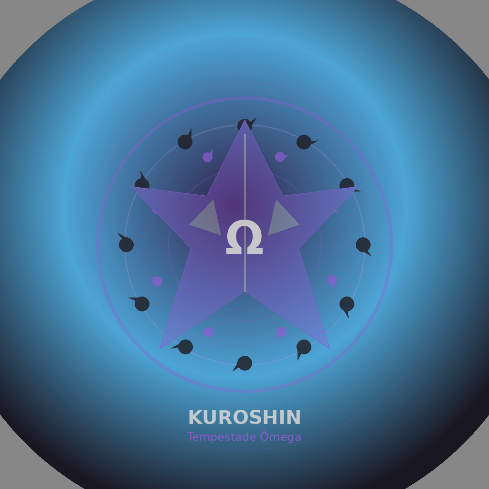

🧬
Herdeiros e Personagens Secundários
Foco nos outros personagens · Escala organizada · Função clara na história
Sem passar o Top 5Segunda geraçãoFunções únicasLore corrigida
"Eles não precisam ser maiores que os cinco primordiais para serem perigosos. Cada um domina uma parte do tabuleiro."
🖼️ Assets Novos dos Outros



📌 Como usar cada personagem na história
Kuroshin
A ameaça que não fala
Use quando a cena precisar de peso, silêncio e tensão. Ele entra para fazer o ambiente mudar, não para explicar poder.
PressãoProdígioÔmega
Aiko
A caçadora de ritmo
Use em lutas rápidas, perseguições e duelos onde controlar tempo, reflexo e instinto seja mais importante que explosão bruta.
TempoTigreAmaterasu
Akari
A luz fora da luta, sombra dentro dela
Use para cenas emocionais, família e também missões silenciosas. Ela cria contraste: carinhosa no cotidiano, letal no combate.
FurtividadeHyūgaPantera
Kael
O combate que piora com o tempo
Use em batalhas longas. Quanto mais o inimigo insiste, mais chakra, defesa e regeneração são corroídos pelo veneno primordial.
VenenoKarmaDragão
Mizuki
A sentença antes da escolha
Use como personagem perigosa em manipulação, destino e controle emocional. Ela não precisa dominar o campo inteiro: basta curvar uma decisão.
SenkaDestinoSerpente
Regra geral
Fortes sem quebrar a hierarquia
Quando comparar poderes, pense assim: os herdeiros vencem a maioria das ameaças lendárias, mas os cinco primordiais continuam em outro patamar.
OrganizadoSem confusãoEscala limpa